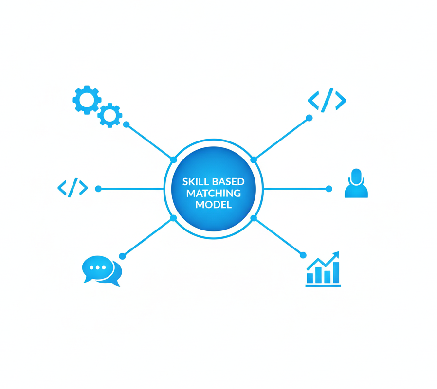

Most of the people who have worked with Christian Nwankwo Chijioke describe him as a highly driven professional known for his all-or-nothing approach to work. When he commits to a goal, he pursues it with full focus and intensity. His eyes always seem to light up with excitement during discussions revolving around artificial intelligence, machine learning, and data.
He holds a Bachelor of Science degree in Computer Science from the University of Abuja, where he graduated as the Best Student in the Computer Science Department. Since then, Christian has worn several hats in the landscape of data, contributing to organisations such as the National Centre for Artificial Intelligence and Robotics, Namla Educational Limited, the University of Abuja, and the Federal Airports Authority of Nigeria.
Currently, he works as a Business Analyst and Consultant at Seagold Information Technology Services Limited. In this role, he is a member of the project team delivering a Bill & Melinda Gates Foundation-sponsored initiative at the National Agency for Food and Drugs Administration and Control (NAFDAC), Nigeria. He collaborates with developers and fellow analysts to develop a software solution aimed at eliminating the circulation of falsified products, while supporting Nigeria’s journey towards attaining Maturity Level 4 of the WHO Global Benchmarking Tool.
Beyond his professional work, Christian is actively developing a data-driven solution to address the inefficiencies in the Nigerian public transport system. He is also part of a team working to optimise the National Youth Service Corps (NYSC) programme, with sponsorship support from the National Information Technology Development Agency (NITDA), an agency under the Ministry of Communications, Innovation and Digital Economy.